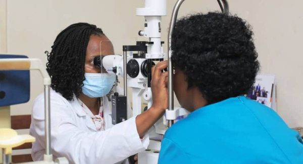

Kidney Care and Dialysis
The hospital lists dedicated kidney care and dialysis services for people with kidney-related conditions.
Selected hospital units and facilities described in the hospital's published information.
These facilities and specialist units are drawn from the hospital’s published website. For current access, referrals, clinic hours and operational arrangements, contact the hospital.
The hospital lists dedicated kidney care and dialysis services for people with kidney-related conditions.

The GI Unit describes specialist digestive healthcare, diagnostic assessment and treatment.

The hospital reports a comprehensive eye care centre offering eye examinations and treatment.

The imaging department lists CT, MRI, digital X-ray, ultrasound and mammography.

The hospital describes the Mother Kevin Wing as a private facility with inpatient, critical care and maternity-related facilities.
The hospital lists cancer care services. Its radiotherapy bunker project has been reported as under development; confirm current treatment availability directly.
Service status: The hospital has reported that its new radiotherapy bunkers are under construction. This website does not describe radiotherapy as operational. Confirm all current services and facility access directly with the hospital.
The hospital publishes information about its Level III Neonatal ICU and reports expansion and equipment support for newborn intensive care.
Read hospital updates